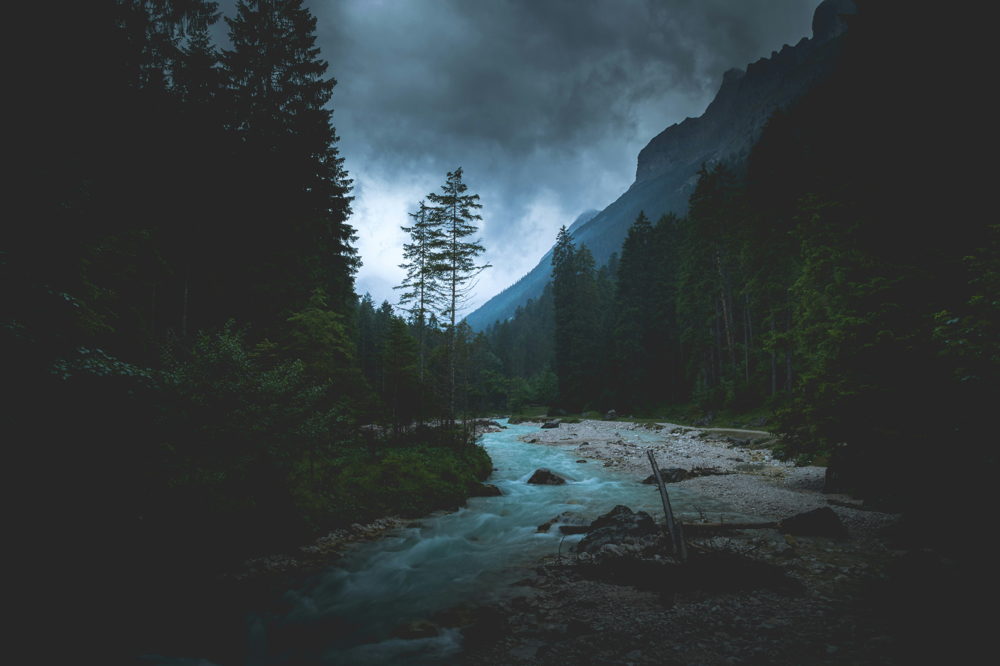

01
Useful systems
I enjoy taking messy ideas or repeated steps and turning them into something clearer: a page, a tool, a dashboard, or a process that is easier to use.
Personal portfolio
I build useful things across design, technology, automation, and hands-on projects.
This is a simple place to show what I work on, how I think, and the kinds of ideas I like turning into real, working things.

Selected work
A broad look at the kinds of work I like building, from cleaner interfaces to practical workflows, smart spaces, and hands-on projects.
I enjoy taking messy ideas or repeated steps and turning them into something clearer: a page, a tool, a dashboard, or a process that is easier to use.
Simple layouts, readable sections, and pages that do not feel overwhelming.
Dashboards, controls, lighting, sensors, and automations designed around real use.
Role logic, access, admin tools, progression, and event-based digital experiences.
Robotics, 3D printing, prototypes, hardware experiments, and physical builds.
About
I like building things that make an idea easier to understand or use. Sometimes that means a website, a dashboard, an automation, a smart setup, an interactive system, or a physical prototype.
I care about how things work, but also how they feel to use. The goal is not to make something complicated look impressive. The goal is to make something useful feel simple.
Interests
I do not want the site to feel only about coding. The way I think about design, movement, building, and useful tools matters just as much.
A reminder that movement, timing, and teamwork matter outside of screens too.
I like when things are simple, clear, and easy to understand without extra explanation.
I enjoy taking an idea and turning it into something real, digital, physical, or in between.
Contact
For projects, ideas, collaboration, websites, dashboards, automation, smart systems, or anything practical worth building.